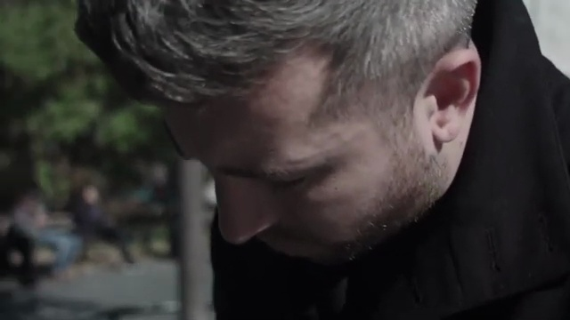
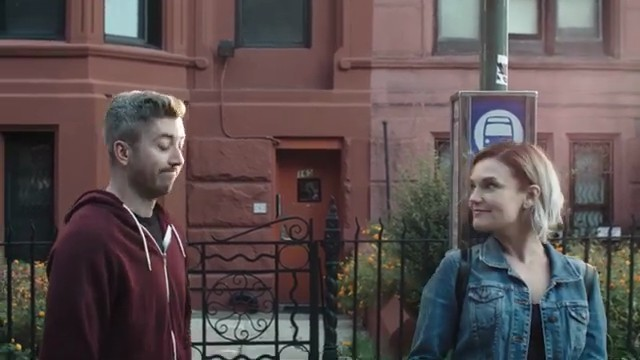
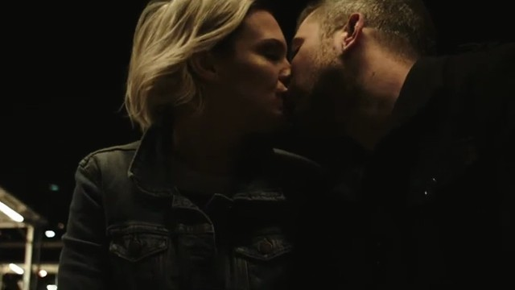
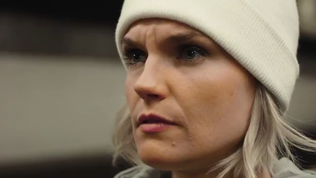
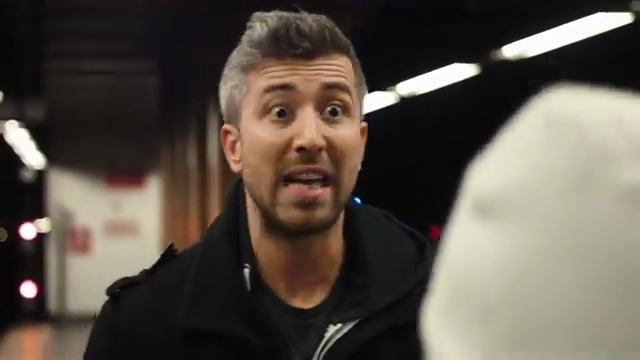
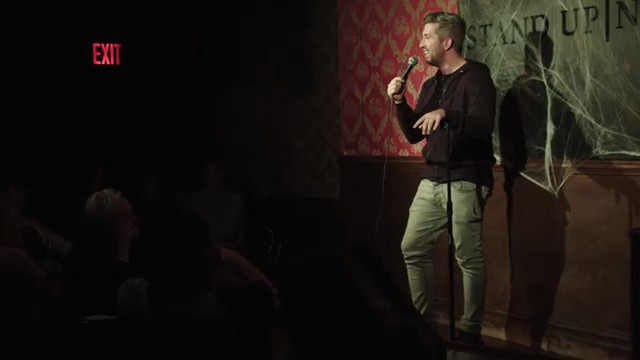

Timing
An ambitious New York City stand-up comedian falls for an art teacher just as his career starts to move. As comedy, love, and distance collide, TIMING follows the choices artists make while chasing a dream — and what those choices cost.
Cast
- Mike CannonMike
- Graci CarliGraci
- Alex AndersonAlex
- Josh AccardoBoyfriend
- Christopher BotteRony
- Tom CassidyTom
- Christopher CrespoAudience Member #5
- Tim DillonTim
- Ava EisensonLeo
- Mike FeeneyBooker #1
Crew
- Alex AndersonWriter, Director, Producer, Editor
- Rob DezendorfCinematography
- Xavi PortilloCinematography
- Daniel HirshonEditor
Trailer
Audience Reviews
"The greatest movie about stand up comedy of all time"— Geeked Up Podcast
"Timing was awesome. Graci and Mike man, I feel like you could write a Jack and Diane song about them."— KFC, Barstool Sports
"An honest and clever mix of comedy and tragedy. I was belly laughing one minute and shouting at the screen the next."— Audience Member
"The realistic dialogue and performances are excellent. It's refreshing to see an urban film with such authenticity."— Audience Member
"The cast, crew, music, and story blew me away. What a fantastic piece of art—I felt so many emotions watching it."— Audience Member
"I already thought Mike was hilarious, but this made me love him even more while also pulling at my heartstrings."— Audience Member
Stills






Behind the Scenes
BTS 1
BTS 2
BTS 3
BTS 4
BTS 5
BTS 6